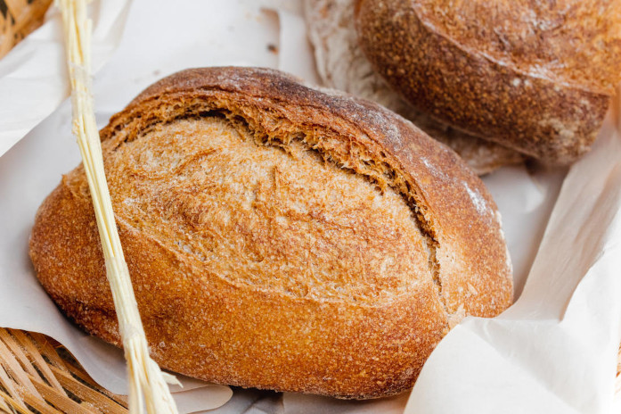

Homebread

Ingredients
- 500g all-purpose flour
- 10g instant yeast
- 10g salt
- 300ml warm water
Instructions
- In a large bowl, mix the flour, yeast, and salt.
- Gradually add the warm water, stirring with a spoon until the dough comes together.
- Transfer the dough to a floured surface and knead for about 10 minutes, until it becomes smooth and elastic.
- Cover the dough with a cloth and let it rest for 1 hour, or until it doubles in size.
- Shape the dough into the desired form and place it on a greased baking sheet.
- Cover with a cloth and let it rest for another 30 minutes.
- Preheat the oven to 200°C.
- Bake the bread for about 30 minutes, or until it's golden brown and crispy.
- Remove from the oven, let it cool, and serve.